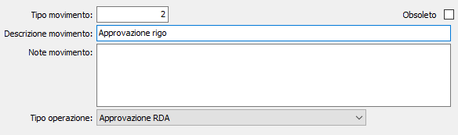

Tipologie di movimento cronologia
La tabella, utilizzata solo se gestita la cronologia in configurazione, consente di specificare le tipologie di movimento che saranno associate automaticamente alle varie fasi di lavoro di ogni singola richiesta di acquisto.
La tabella viene fornita già precaricata con le fasi principali gestite automaticamente.

TIPO MOVIMENTO: codice numerico del tipo di movimento. Sul campo sono disponibili le funzioni di ricerca (F9) sulla tabella stessa.
DESCRIZIONE MOVIMENTO: campo alfanumerico di 50 caratteri per inserire la descrizione del tipo di movimento attivo.
NOTE MOVIMENTO: campo note per descrizioni estese relative al tipo di movimento attivo.
TIPO OPERAZIONE: indica il tipo di operazione per cui sarà utilizzata la tipologia attiva, valori possibili:
Operazione generica
Inserimento nuovo rigo RDA
Variazione rigo RDA
Cancellazione rigo RDA
Approvazione RDA
Annullamento approvazione RDA
Assegnazione ad ufficio acquisti
Modifica assegnazione ad ufficio acquisti
Accettazione rigo RDA
Annullamento accettazione rigo RDA
Rigo RDA respinto
Annullamento rigo RDA respinto
Generazione richiesta di offerta dal rigo
Annullamento generazione richiesta offerta da rigo
Generazione ordine fornitore da rigo RDA
Annullamento generazione ordine fornitore da rigo RDA
Ricevuta merce per rigo RDA
Annullamento ricevuta merce per rigo RDA
OBSOLETO: flag attivabile dall’utente per inibire il possibile utilizzo dell’elemento di tabella in esame nelle successive transazioni.